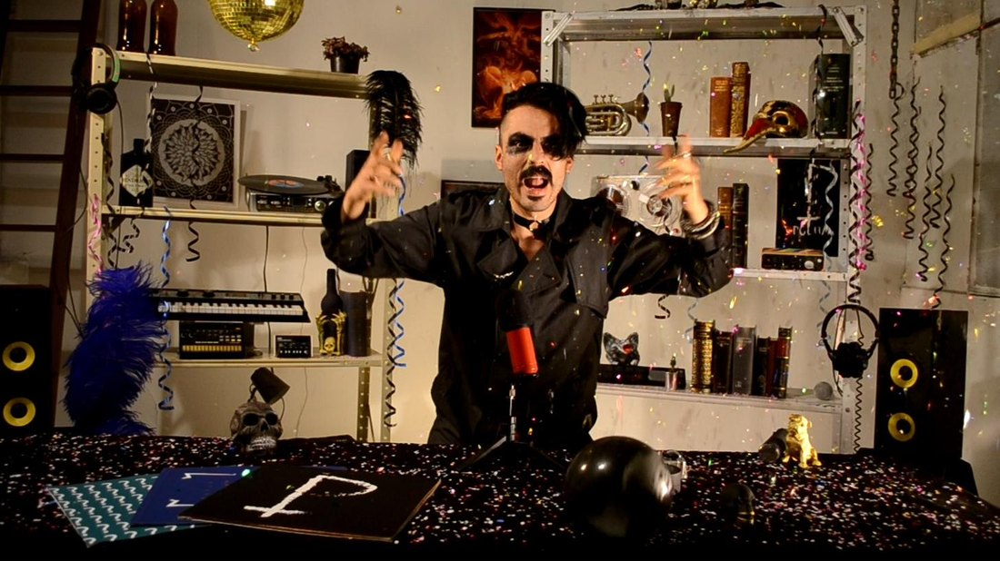
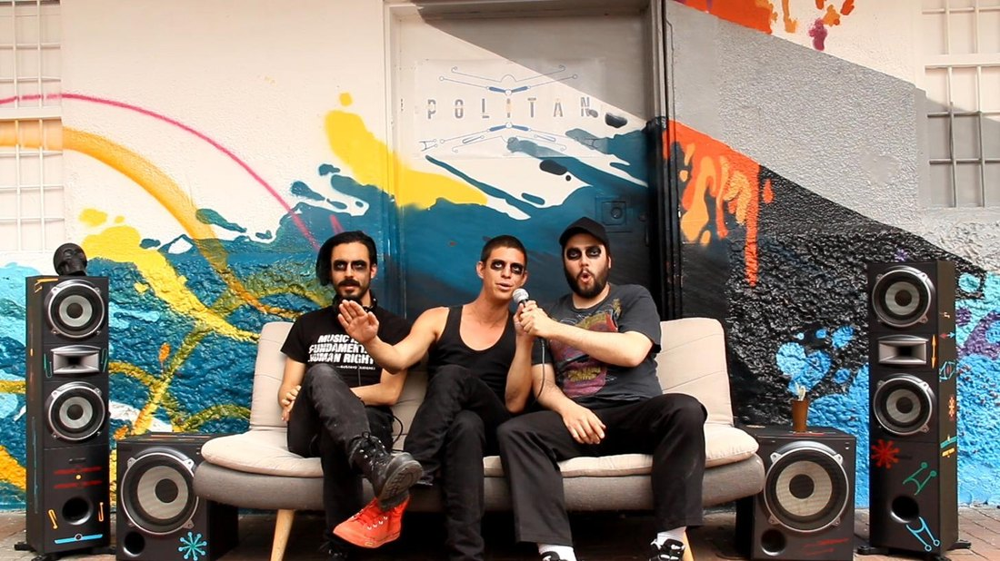
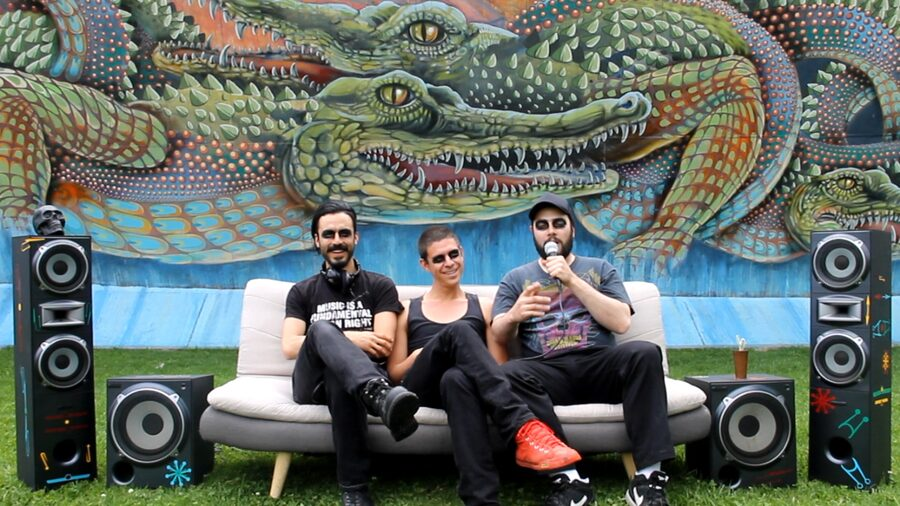
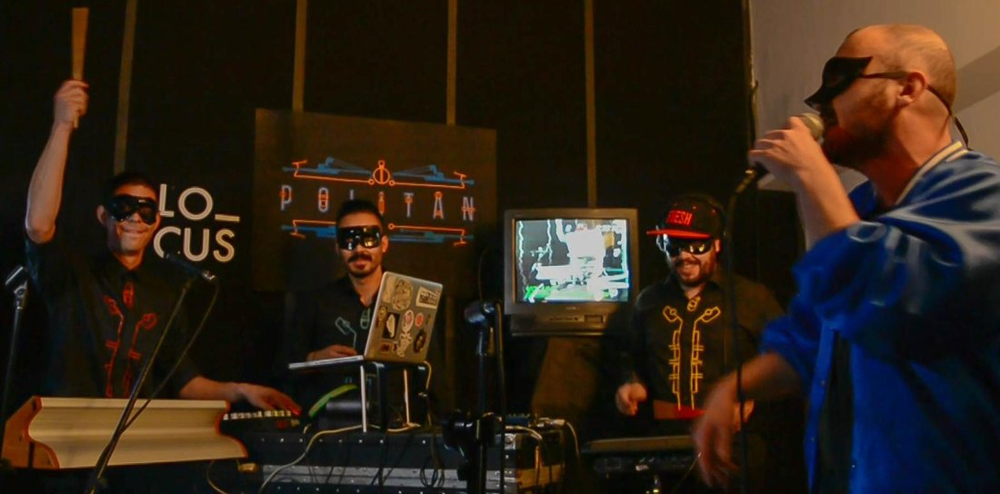
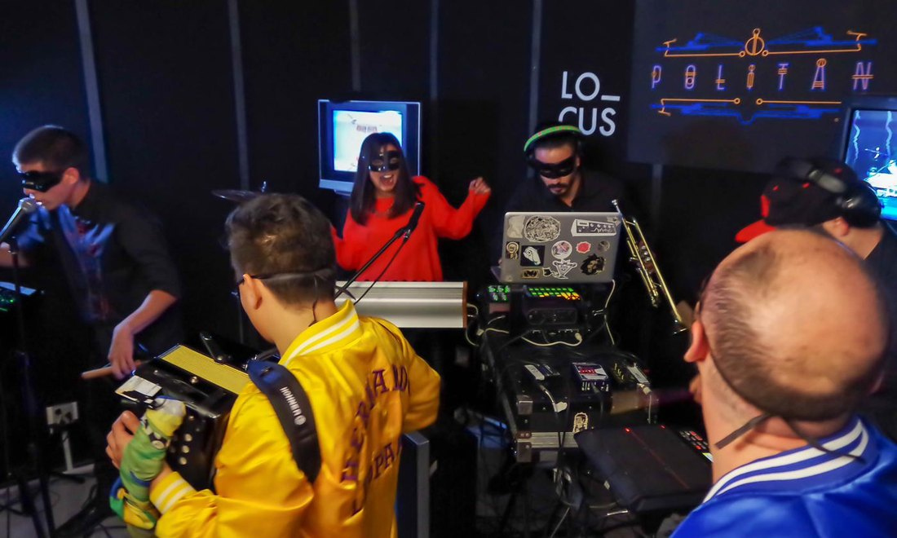
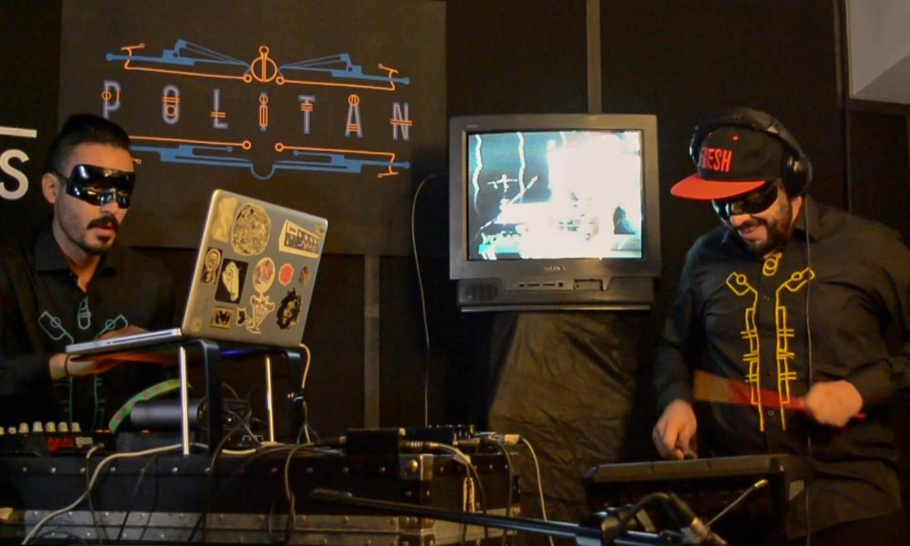
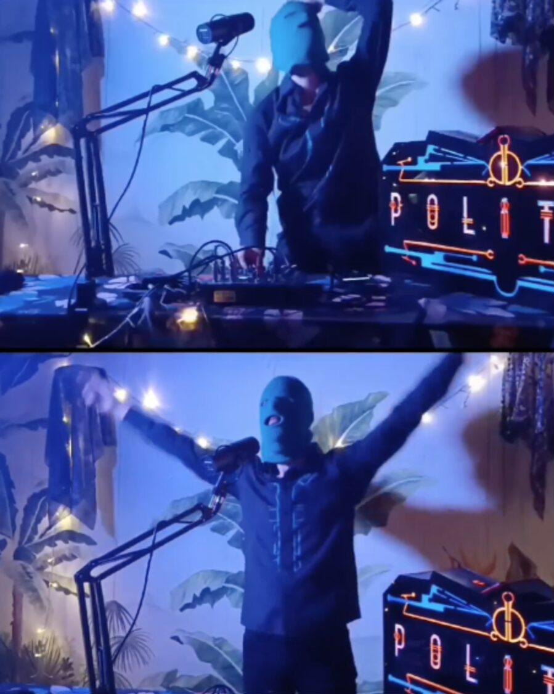
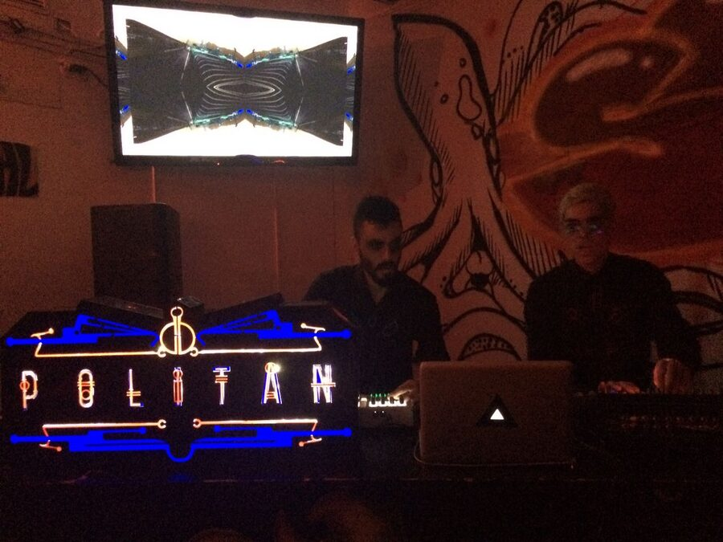

Band & Music Projects
Politan
A band-project with a social purpose, focused on music production and education, digging into the streets of Bogotá.
Concept & Kickstarter
In the early days with the duo Kaput: the visual concept of the band, the concert outfits, and a crowdfunding video for the Kickstarter campaign that funded the album — shot between the studio and the streets of Bogotá.



Live
The album-release concert at LO_CUS — the full band and guests in masks and hand-painted outfits, the logo prop glowing behind them, CRT visuals running live on stage.



The Live-Set Prop
A laser-cut lamp shaped like the band's logo, designed and built as a concert prop — carried through both live sets and the album-release concert, lighting the stage from within.

